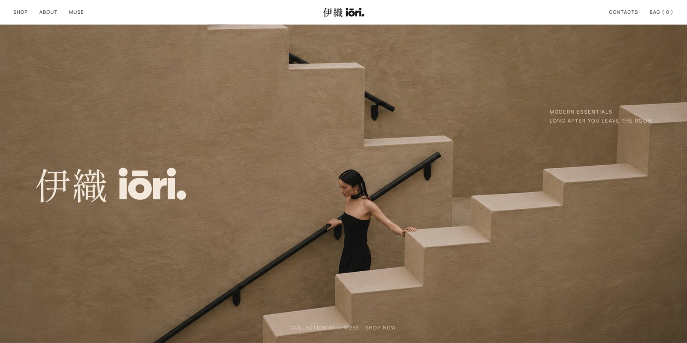
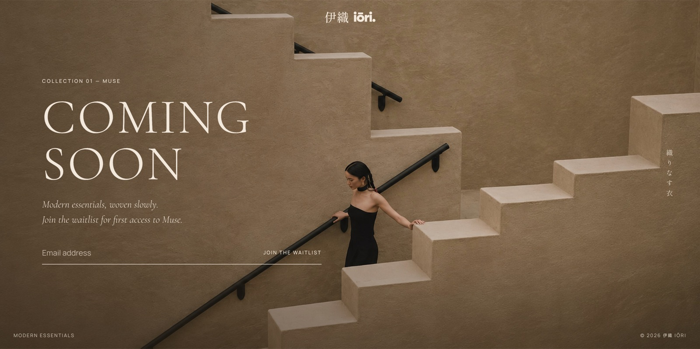
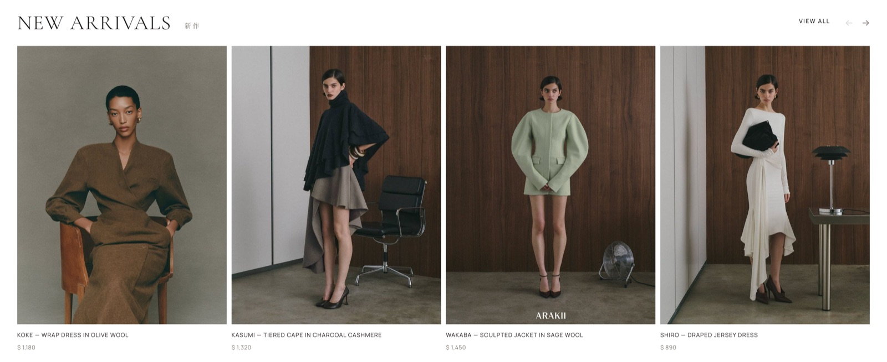
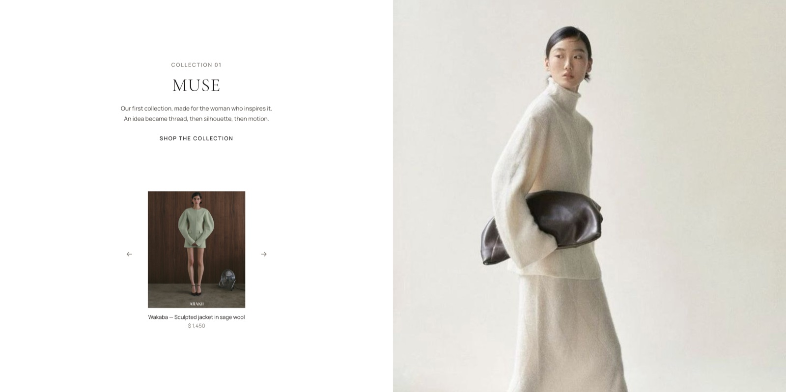
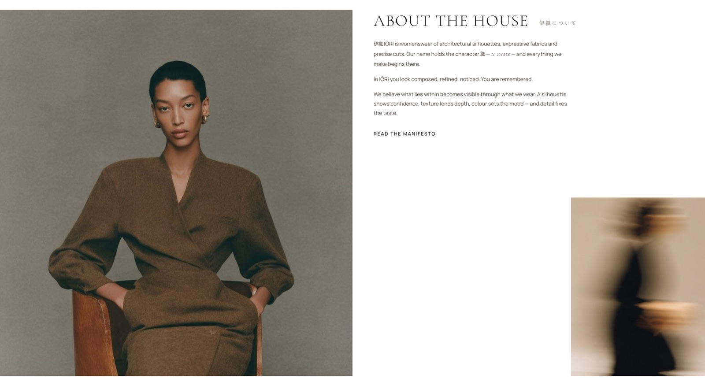

← Portfolio ( Case study — 02 )
Modern essentials, woven slowly.

The brief
Iōri is a new womenswear label of architectural silhouettes, expressive fabrics and precise cuts. Its name holds the character 織 — to weave.
The house needed an identity and a home online for its first collection, Muse: first a waitlist page to build anticipation, then a full store for launch day.


Approach
(03)- 01
A name in two scripts
The Japanese 伊織 sits beside a soft, geometric Latin wordmark — two halves of one name, equal in weight.
- 02
Let the clothes lead
Generous whitespace, warm stone tones lifted from the campaign and serif capitals keep the focus on silhouette and fabric.
- 03
From waitlist to store
The coming-soon page built the list; the store reused the same system, so launch day felt like the next page of the same story.


Outcome
Muse opened to a waiting list rather than an empty room — and the system is ready for every collection that follows.